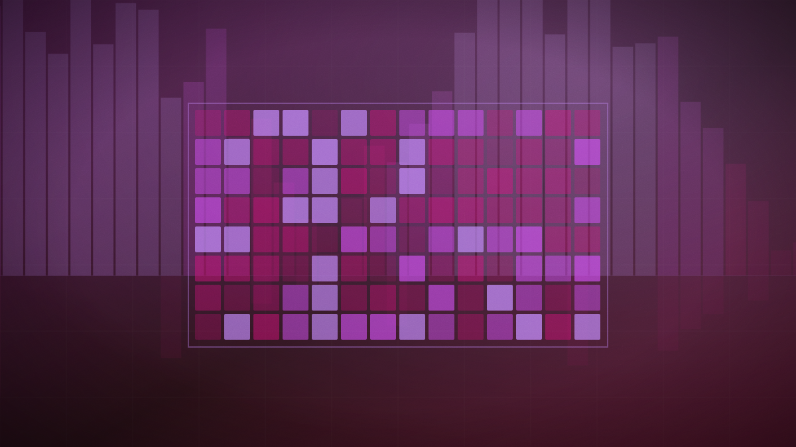

Inference
Nvidia moves a KV cache between models with linear regression, skipping the re-prefill
Transferring a 32,768-token cache from Qwen3 14B to 32B took 278 milliseconds against seven seconds to recompute it, holding 73% to 98% of standalone accuracy.

Original cover art, generated for this story. THE VISSION does not republish third-party press imagery.
The short version
- Nvidia researchers describe a method for handing a KV cache from one model to another, avoiding the full recomputation a receiving model normally performs.
- The mapper is fitted with per-head ridge regression on a calibration set of 500 text sequences — linear algebra rather than a trained network.
- Reported speed-ups run from 2.7 to 25 times against re-prefilling, while retaining 73% to 98% of the target model's standalone accuracy.
- Tested across Qwen3, Llama 3.1 and Ministral 3 from 3B to 70B, including an 8.8x parameter jump from Llama 3.1 8B to 70B that held 72.8% accuracy.
Transferring a 32,768-token cache from Qwen3 14B to 32B took 278 milliseconds against seven seconds to recompute it, holding 73% to 98% of standalone accuracy.